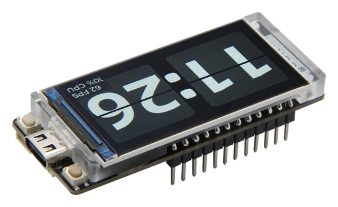

Smart Clock · Embedded
A custom smart clock built on the LilyGO T-Display-S3-Touch board. C++ firmware with a UI rendered directly to the capacitive touch screen — built from the firmware up.

Overview
A self-built smart clock running on the LilyGO T-Display-S3-Touch — an ESP32-S3 dev board with a built-in capacitive touchscreen. Firmware is written in C++, with a custom UI rendered directly to the display. Designed from scratch, no off-the-shelf clock firmware involved.
Hardware
MCU
ESP32-S3
Display
1.9" ST7789
Touch
CST816 Capacitive
Memory
16MB Flash · 8MB PSRAM
Connectivity
Wi-Fi · Bluetooth 5
Power
USB-C
Features
NTP-synced timekeeping.
Custom-rendered on the display.
Network-aware updates.
Swappable layouts.
Optimized refresh loop.
Custom firmware, no presets.
Tech stack
Firmware language.
Build environment.
Display driver library.
Toolchain & uploads.
Dev log